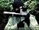

|
 | Egy érdekes vitaindító írást kaptam az imént. Kapva az alkalmon néhány régebbről váró levelet is átnézek, talán találok valamit, ami érdekes lehet, de mindenek előtt egy programajánlóval kezdjük: Nemzeti Front és H-599 koncert a kerepesi Patkó Csárdában
április 5-én, vasárnap. A belépő: 1000 forint.
Pontos címért kattints a képre!
küldött nekünk vagy húsz képet a készülő 4-es metró alagútjából. Nézzetek Fehérvári utat és Gellért teret, valamint fúrópajzsot a föld alatt:
A következő írást vitaindító jelleggel közlöm, ezzel a Bombagyár szerkesztősége nem feltétlenül ért egyet. Rábay András küldte nekünk: Fogatlan radikalizmus
Nem fogom elemezni a magyar radikalizmus gyengeségének okait. Ezt már sokan megtették helyettem. Én egy igazi radikálisról szeretnék írni, aki sok önjelölt Napóleonnal szemben valóban radikális. A neve: Vojislav Šešelj.Még véletlenül sem szeretném a Szerb Radikális Párt vezetőjét felmagasztalni, mindenki tud magyarellenes érzelmeiről. A kontrasztot kívánom bemutatni, hogy a szerb radikálisok mennyiben mások, mint a hazaiak.Šešeljről mindent el lehet mondani, csak azt nem, hogy hatástalan. Ezt már a kilencvenes évek elején bizonyította, mikor fel kívánta robbantani a Virágosházat (itt nyugszik az öreg Broz), természetesen lecsukták, amire a mai napig nagyon büszke. A kilencvenes években a szerb parlamentben Milošević beszéde közben kitépte a falból a mikrofonokat, máskor pisztollyal fenyegetőzött egy nagygyűlésén, megint máskor egy riportert vett kezelésbe. Írói munkássága ennél is nagyobb: így kerülnek elő olyan könyvek, mint „Az őrült Vuk narkomániája” (egykori harcostársáról, Vuk Draškovićról), „A szerb Ceausescu-házaspár” (Miloševićről és feleségéről), „Tony Blair, az angol buzi fingadék”, „Helmuth Kohl és Hans Genscher Hitler leghűbb követői”, stb. Vagyis: a valamikori csetnik vajda igazán nem fogja magát vissza, még az sem érdekli, ha börtönbe kerül írásai miatt.Sőt! Sokszor hangsúlyozta, hogy ő minden rezsim börtönében ült már, és reméli is, hogy minden rezsim börtönében ülni is fog! Folytassuk! A Hágai Nemzetközi Törvényszék előtt csúnya szavakkal illeti az ügyészt és a bírókat, azokat ahol csak lehet, a legpikánsabb jelzőkkel illeti: nem érdekli, hogy ennek milyen következményei lesznek.Talán fasisztának, nácinak, szélsőségesnek kiáltják ki? Kit érdekel! Ő erre válaszul pedofilnak, nekrofilnak nevezi az őt sértegetőket, a sörétesre ágyúval válaszol.Talán szimbólummal is felér egyik hágai kijelentése:Itt Šešelj elmondja, hogy őt nacionalista ideológiája miatt kívánják elítélni, ő azonban erre büszke, és az utóbbi öt évben azon munkálkodik, hogy ideológiáját terjessze. De köszönetet is mond a törvényszéknek: így ugyanis ő szenvedhet az ideológiájáért, ami ettől csak erősebb és erősebb lesz – napról napra. Persze szomorú is: méghozzá azért, mert a Hágai Törvényszék statútuma nem ír elő halálbüntetést (így büszkén halhatna meg, mint nagy barátja Szaddám Husszein) – ez örökké halhatatlanná tenné életművét: legyen hát az ítélet minél szigorúbb!„Teljes életet éltem, de az ideológiámat halhatatlanná akarom tenni. És máris halhatatlan, mert ligikailag szilárd, mert szilárdan történelmi tényeken alapul, mert antiglobalista. Halhatatlan azért is, mert nyílt ellensége vagyok az Egyesült Államok egész bolygóra kiterjedő hegemóniájának és dominanciájának. Mert az Európai Unió engesztelhetetlen ellenfele vagyok. És mert a NATO nagy ellensége vagyok. Ezért ítélnek el engem, és jól teszik, hogy elítélnek engem.”Elmondja: ő valójában olyan helyzetben van, mint Tolsztoj Háború és békéjének főhőse, Pierre Bezuhov, aki nagyot nevetett azon, hogy a franciák el akarták pusztítani, azonban ezek az ő halhatatlan lelkét sosem tudnák megölni („Hahaha”). Ugyanígy: a Hágai Törvényszék megölheti őt, de ideológiáját soha; lehet hogy hamarosan távozik az élők sorából, de akkor valószínűleg a nevetéstől fog meghalni: a nevetséges ügyészségen, a nevetséges bíróságon és a nevetséges Egyesült Államokon és más nyugati erőkön, amelyek ezen anti-szerb törvényszék mögött állnak.Aki ezek után sem érti, miért nevezem fogatlan oroszlánnak a magyar radikalizmust, tegye egy ringbe a hazai nagyágyúkat Šešeljjel és döntsön: ki a pehelysúlyú, és ki: a nehézsúlyú.Sportszerű?
Szép estét! Szoktam
olvasni az Origót. Rendszeresen. Abban van egy olyan rovat, Hogy IWIW a
világ körül, vagy valami ilyesmi. Ebben idegenbe szakadt hazánk fiai
ill. lányai írnak az városról, ahol élnek (messze idegenbe'). A második
sör végén támadt egy olyan ötletem, hogy mi lenne, ha csinálnátok
valami hasonlót a Bombagyáron. Ezt úgy gondolnám, hogy a regisztrált
gyárlakók kapnának lehetőséget arra, hogy a saját falujukról,
városukról (esetleg lakótelepükről) írnának posztot nektek. A gyárlakó,
mint büszke Biharbasznádi, ír egy ismertetőt falujáró/városáról nektek
E-mail-ben, amit ti belátásotok szerint kitehetnétek a rovatba,
szerzőként megjelölve a regisztrált gyárlakót avatárostól, nevestől.
Ezzel kvázi egy egyszeri alkalomra szóló szerkesztői jogot adva neki.
Ezzel is szaporíthatnátok a posztok számát, illetve megismertethetnétek
az ország (Kárpát Medence) akár eldugott helyeit is az olvasókkal. A
dolog hátránya, hogy a leendő cikkek szelektálásával a munkátok
szaporodna. Az ötlet tulajdonképpen az első sör végén kezdett
körvonalódni bennem. Eszembe jutott ugyanis Bakó László, aki falum
"megbecsült" lakója. Azért idézőjelben, mert egy kis falu európai hírű
szobrászáról van szó, aki a munkájának, a múvészetnek él (sokszor
kenyéren és vizen), de lakhelyén a helyi vezetés sokszor csak
kihasználja, és potom pénzért dolgoztatja. Ő volt az a művész, aki
Tolna megyében az elsők között készített kő emlékművet az 56-os
szabadságharc emlékére. Saját anyagból, gyakorlatilag rezsiköltségért
(kővágó korong, szerszámok, stb). Még a követ is ő adta. Az ötletet
tulajdonképpen nagyapámtól származik, aki ugyan nem 56-os (lévén, hogy
vidéki), de a Rákosi rendszerben azért csak kiveregették a fogait, mert
nem adta a földjét, meg a lovait. Szóval ez a két ember egy közös
fröccsözés után összebeszélt, gyűtöttünk pár fiatallal pénzt a faluban,
meg ástunk alapzatot (mert a jegyző azt hitte, hogy egy egy méter mély
gödör majd keresztbe húzza a tervet) és meglett az emlékmű. Szóval
kicsit elkanyarodtam ugyan, de a lényeg, hogy magamról bizton
állíthatom, hogy nem csak büszke sváb/magyar, de büszke várdombi is
vagyok és Laci bátyámon kívül még sok dolog lenne, amit megmutatnék a
világnak lakhelyemből. Ha rágugliztok "Bakó László" -ra találtok pár linket róla, de az első párat be is másolom ide: http://www.tolnaart.hu/bako/index.htmhttp://www.folio.hu/fa/lapok/ak10006.htmlhttp://www.kaposart.hu/index.php?option=com_content&task=view&id=14&Itemid=40Részletesebb
infó helyszinen. Ha le szeretnétek jönni, vendégeim vagytok.
Ennivalóból, és szekszárdi borból nem szenvedünk szükséget. A falum honlapja: www.vardomb.huHa érdekel a téma, és van kapacitásotok az ötlet megvalósításához, magam részéről szívesen látlak benneteket. Üdvözlettel: petigyerek | | vissza a főoldalra |  |
| 1 2 3 4 5 | |  | | | | | | | | | | | | | | | | 

|
| | | | | | 1 2 3 4 5 | |
|


túraszervező
túra-rss
mi ez?

legjobbak
legolvasottabbak
tartalomjegyzék
rss feed

AboryM
Caesar
Count Grishnackh
cscsabi
eürdüngh
Feki
GyalogKakukk
Ishukone
Kadzseszka
LACI1993
Mini
Muska
Rommel
Segi
Takezó
tommylee
vikcee
|